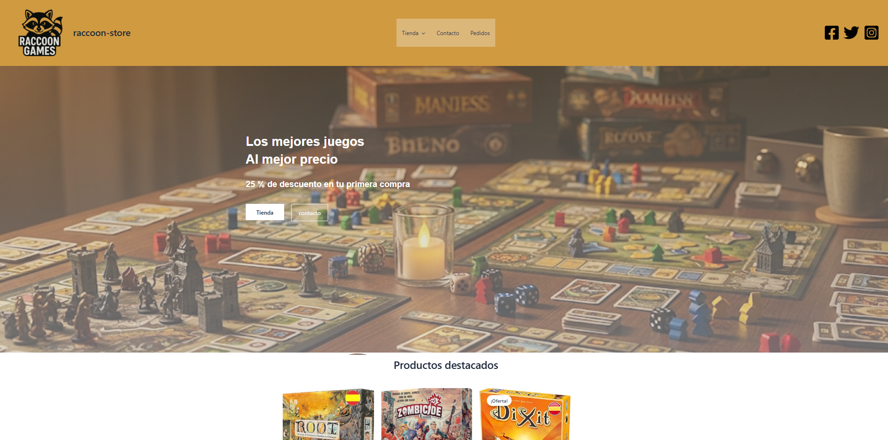

Tienda de juegos de mesa
Desarrollo completo de una tienda online especializada en juegos de mesa utilizando WordPress y WooCommerce. El proyecto incluyó personalización avanzada del tema, integración de sistema de inventario en tiempo real, configuración de múltiples métodos de pago y envío, y optimización SEO específica para el nicho de juegos de mesa. Implementé un diseño completamente responsive que funciona perfectamente desde móviles hasta desktop, con especial atención a la experiencia de compra móvil. La tienda incluye funcionalidades como filtros avanzados por categorías de juegos, sistema de reseñas, wishlist de usuarios y panel de administración personalizado para gestión de stock y pedidos.
